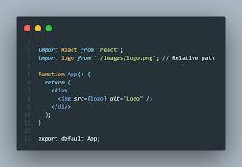

An element with position: relative; is positioned relative to its normal position. You can use the top, bottom, left, and right properties to move the element from its normal position without affecting the layout of other elements.
This div element is positioned using relative positioning. It is moved 30 pixels to the right and 20 pixels down from its normal position.
